Before we start, we are aiming for the taste, not the form! You can use any baking pan you have, and it does not have to be a star shape.
In the baking pan, mix 100g of flour, 30g of sugar, one egg, 60g of milk, and 7 to 8 grams of dry yeast.
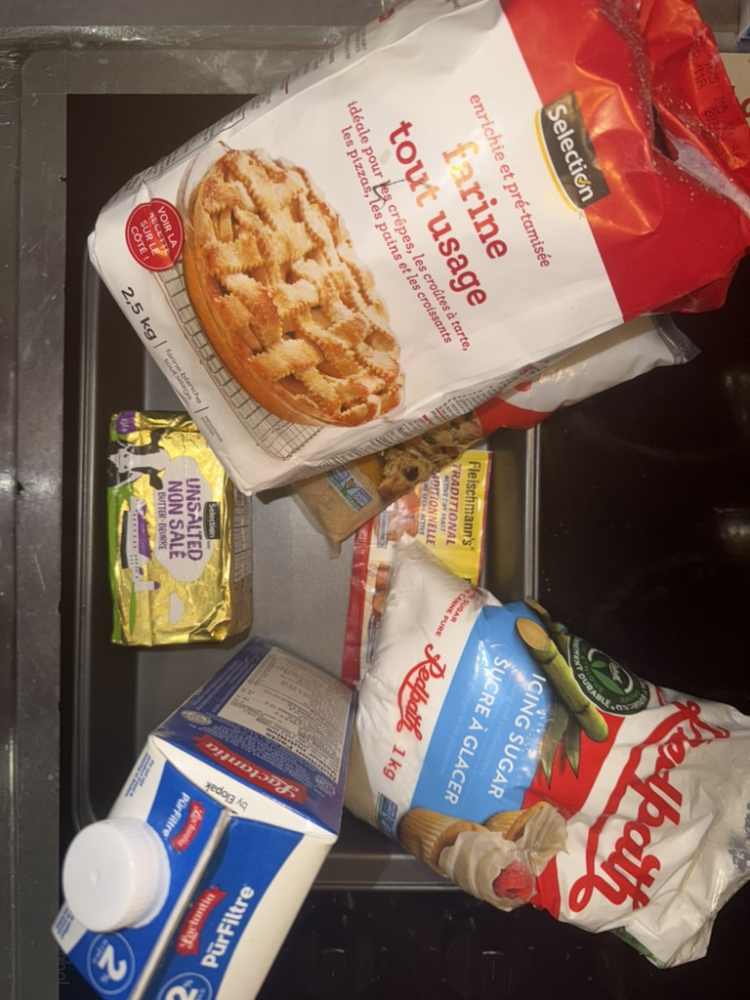
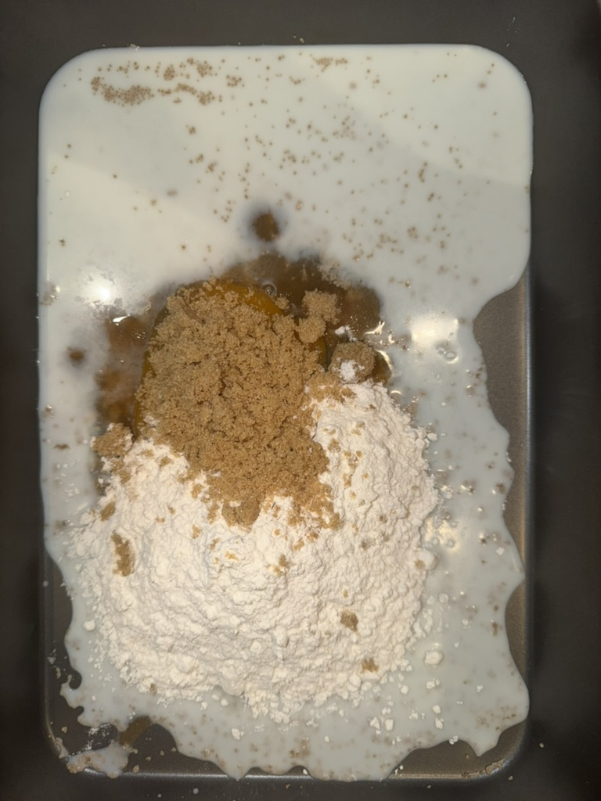
02
Mix the batter thouroughly, which allows the yeast to activate during the process!
After Mixing, it should look like this! Not so liquid, but not so solid either!
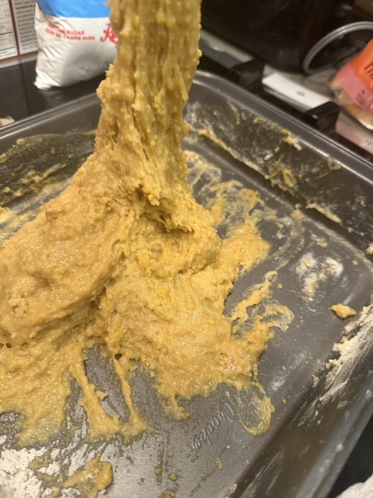
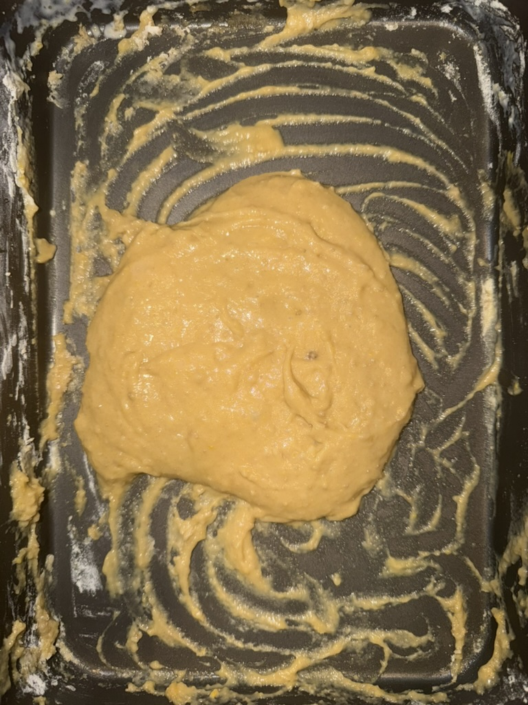
03
You rest the batter for an hour while the yeast is activating!
Meanwhile you can prepare the butter since the butter should be in a room temperature.
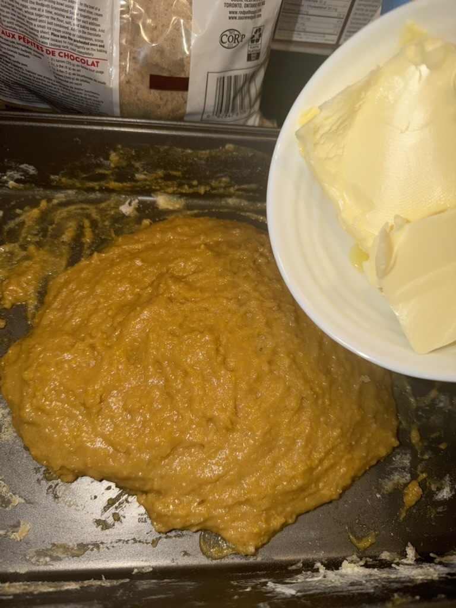
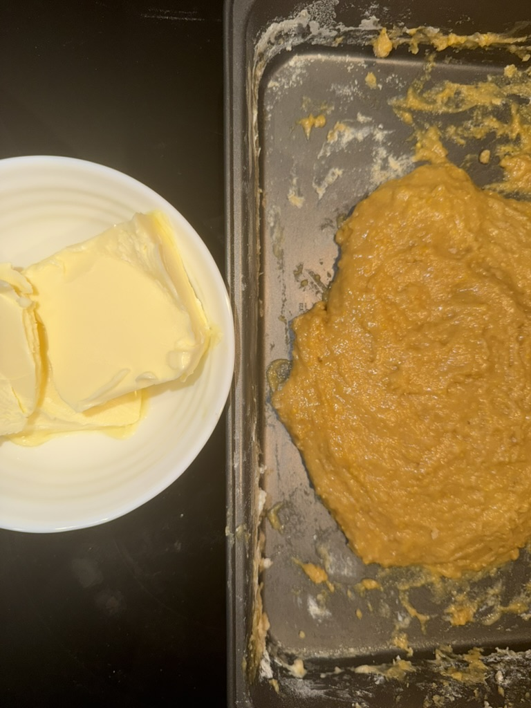
04
When an hour has passed, you can start adding rest of the flour, eggs, sugar!
Mix it thoroughly until well combined. Around 10 to 15 minutes is perfect!
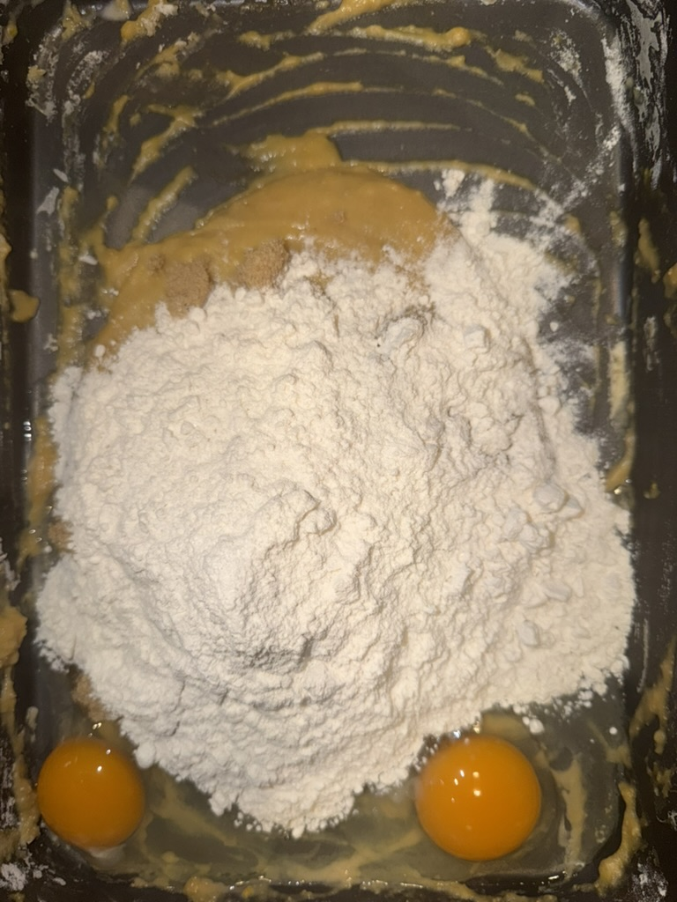
05
If you are done with mixing, you can start adding the butter! Make sure the butter is at room temperature for easy incorporation.
Tip: Make sure to add a butter in three portions so the batter does not get divided with oil.
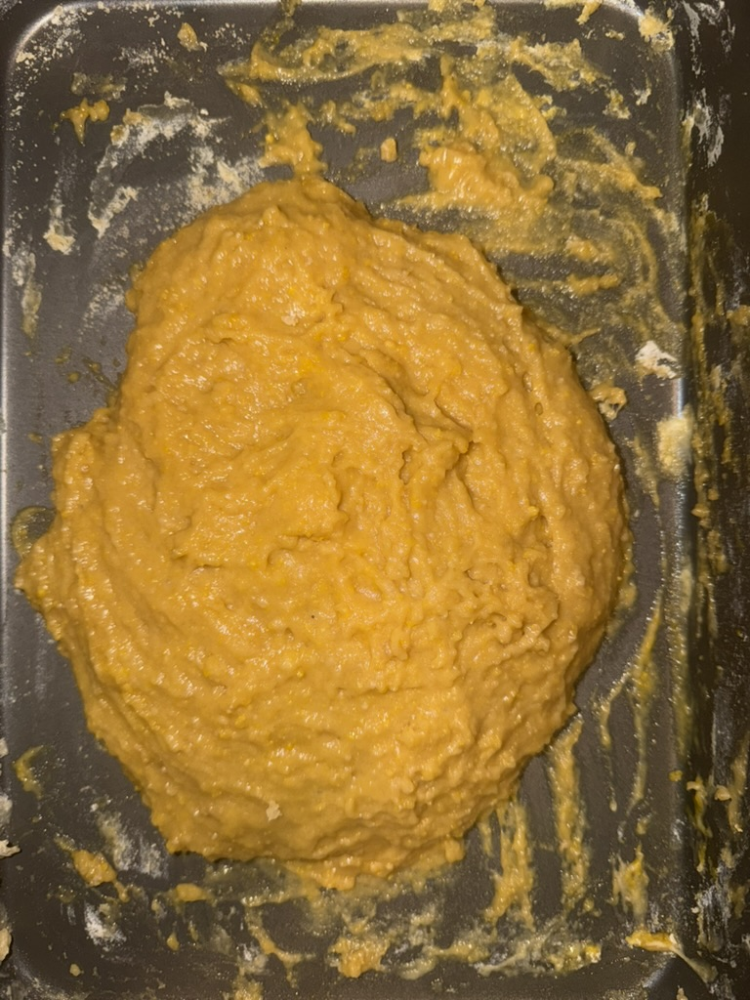
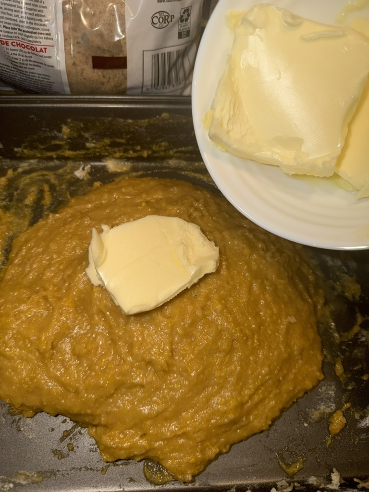
06
Now you batter has lightened up! Here comes a kick!
A grind of lemon peel into a batter allows the scent to be covered in the batter itself, and remains after the baking process!
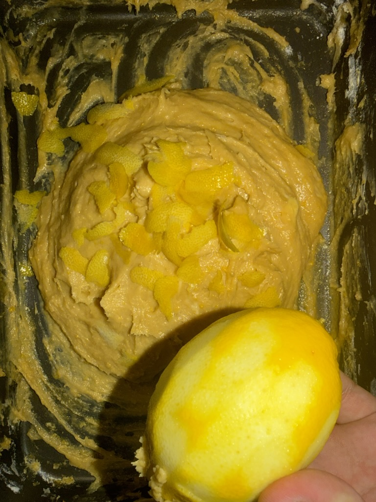
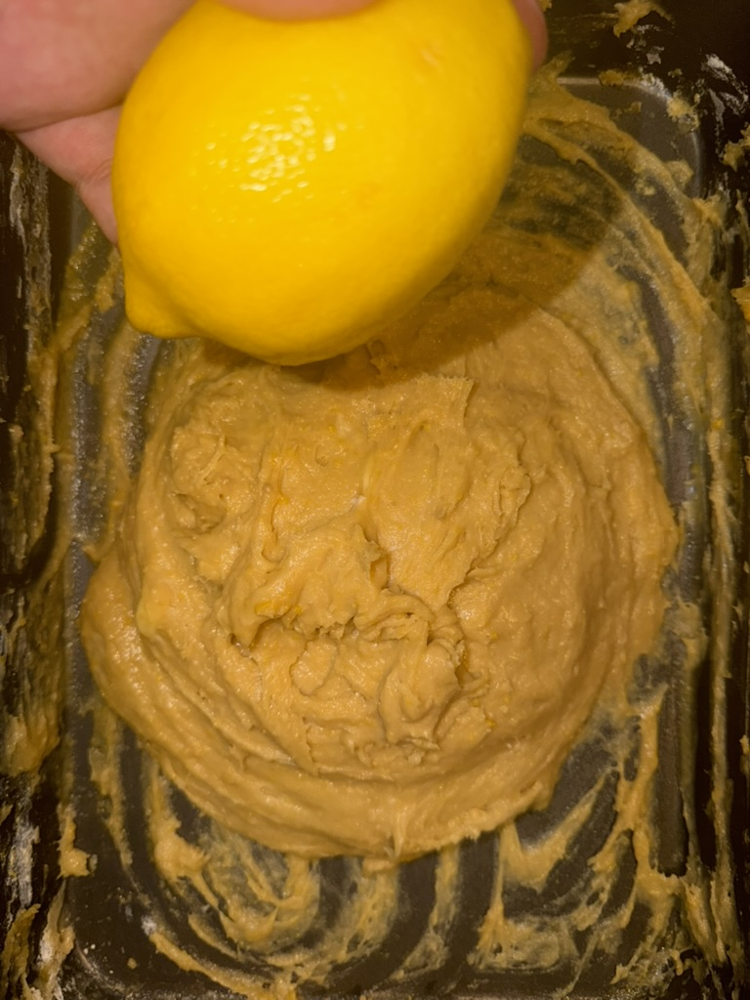
07
Now you rest the batter around an hour and half!
After that, the batter should be twice its size!
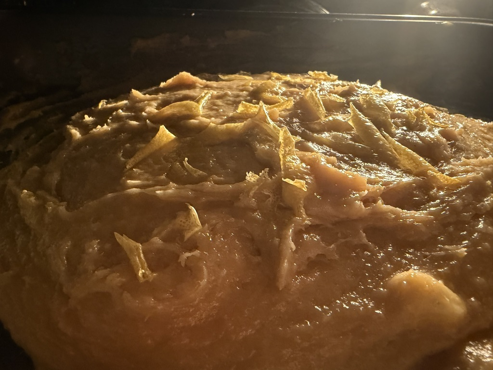
08
Heat the oven to 165 to 170 degree celcius, and put the batter inside for 40 minutes. Make sure to not bake it too long or too short!
After done cooking, cover it with sugar powder, and Enjoy!